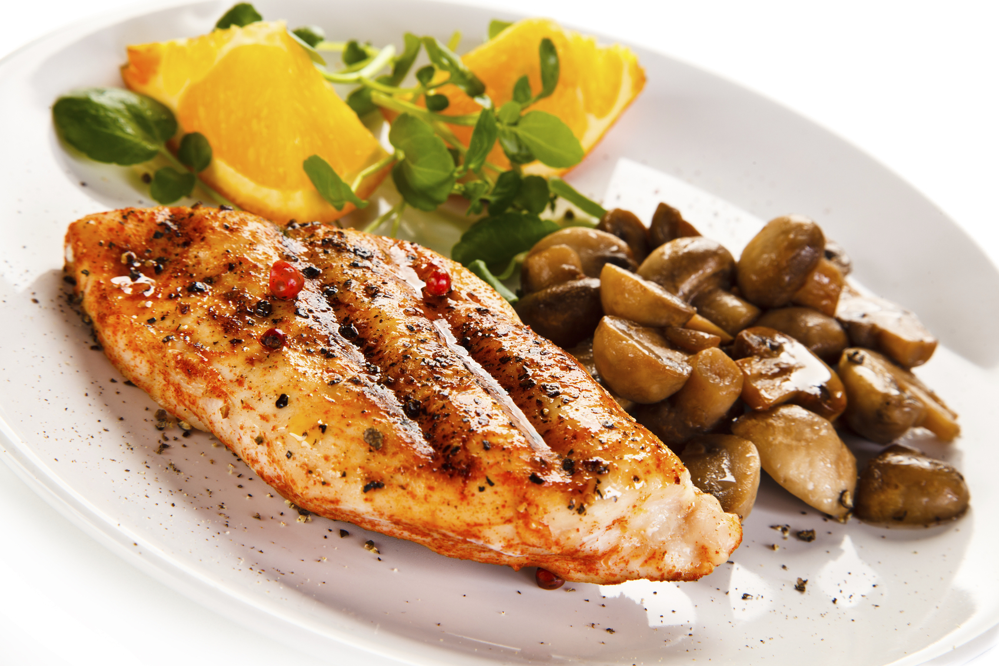
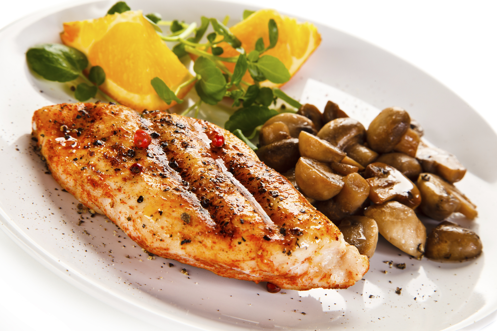

Historial
Ñoquis de Papa
Hay muchas recetas de ñoquis, elegimos ésta porque a nuestro criterio consideramos que es la masa más típica de los ñoquis de papas, lo que no quita que se le puedan hacer modificaciones. Eso queda a gusto de cada uno. La cantidad de harina es, por cada kilo de papas 300 gramos de harina aproximadamente. La variación en la harina debe ser muy poca para que los ñoquis queden con consistencia pero tiernos, que es la diferencia tan notoria con los ñoquis que no son caseros. Un gran detalle a tener en cuenta es la forma de cocinar la papa, detalle que especificamos a continuación en la receta.
Pollo a la pizza
Se pone al horno, previamente calentado, las seis entrepiernas aderezadas con sal un poco de aceite, pimienta y ajos molidos, se les deja hasta que estén cocidas y hayan botado toda su grasa, luego se sacan y enfrían, encima se les coloca el queso mozarrella, una rodaja de jamón, una aceituna verde y se le decora con un trozo de pimentón y se lleva nuevamente al horno hasta que el queso se haya derretido, se saca y se le echa un poco de orégano, y listo para saborear esta rica comida!